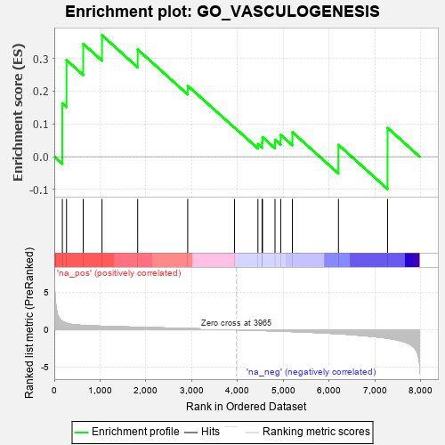
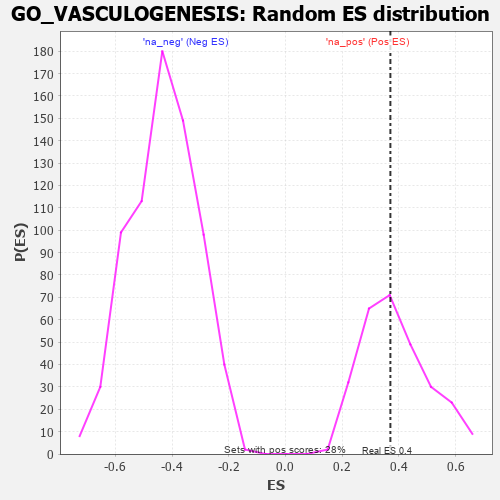

| | | Dataset | 7d |
| Phenotype | NoPhenotypeAvailable |
| Upregulated in class | na_pos |
| GeneSet | GO_VASCULOGENESIS |
| Enrichment Score (ES) | 0.37017795 |
| Normalized Enrichment Score (NES) | 0.95117915 |
| Nominal p-value | 0.5160142 |
| FDR q-value | 0.7732078 |
| FWER p-Value | 1.0 |
Table: GSEA Results Summary

Fig 1: Enrichment plot: GO_VASCULOGENESIS
Profile of the Running ES Score & Positions of GeneSet Members on the Rank Ordered List
| PROBE | GENE SYMBOL | GENE_TITLE | RANK IN GENE LIST | RANK METRIC SCORE | RUNNING ES | CORE ENRICHMENT | | 1 | FOXF1 | | | 176 | 1.136 | 0.1629 | Yes |
| 2 | TBX20 | | | 267 | 0.880 | 0.2948 | Yes |
| 3 | GLMN | | | 632 | 0.583 | 0.3440 | Yes |
| 4 | YAP1 | | | 1041 | 0.475 | 0.3702 | Yes |
| 5 | SGPL1 | | | 1820 | 0.334 | 0.3267 | No |
| 6 | AGGF1 | | | 2911 | 0.164 | 0.2164 | No |
| 7 | CCM2 | | | 3933 | 0.005 | 0.0889 | No |
| 8 | SETD2 | | | 4443 | -0.084 | 0.0385 | No |
| 9 | RIN2 | | | 4535 | -0.101 | 0.0436 | No |
| 10 | NTRK2 | | | 4543 | -0.104 | 0.0597 | No |
| 11 | FBXW7 | | | 4816 | -0.161 | 0.0518 | No |
| 12 | FZD4 | | | 4940 | -0.186 | 0.0666 | No |
| 13 | SMO | | | 5195 | -0.247 | 0.0748 | No |
| 14 | MYO1E | | | 6200 | -0.537 | 0.0360 | No |
| 15 | QKI | | | 7272 | -1.145 | 0.0878 | No |
Table: GSEA details [plain text format]

Fig 2: GO_VASCULOGENESIS: Random ES distribution
Gene set null distribution of ES for GO_VASCULOGENESIS